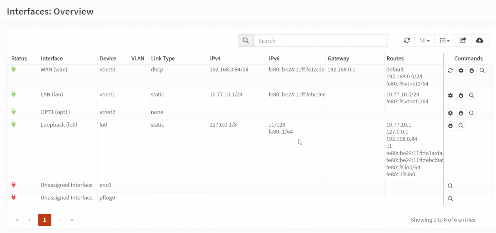
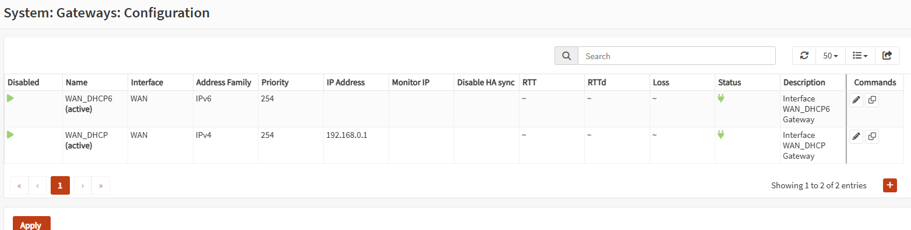
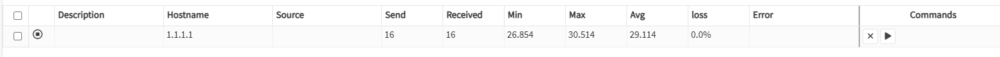
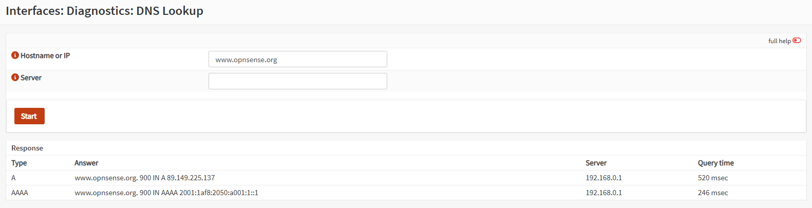
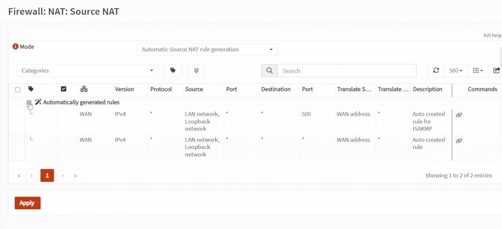
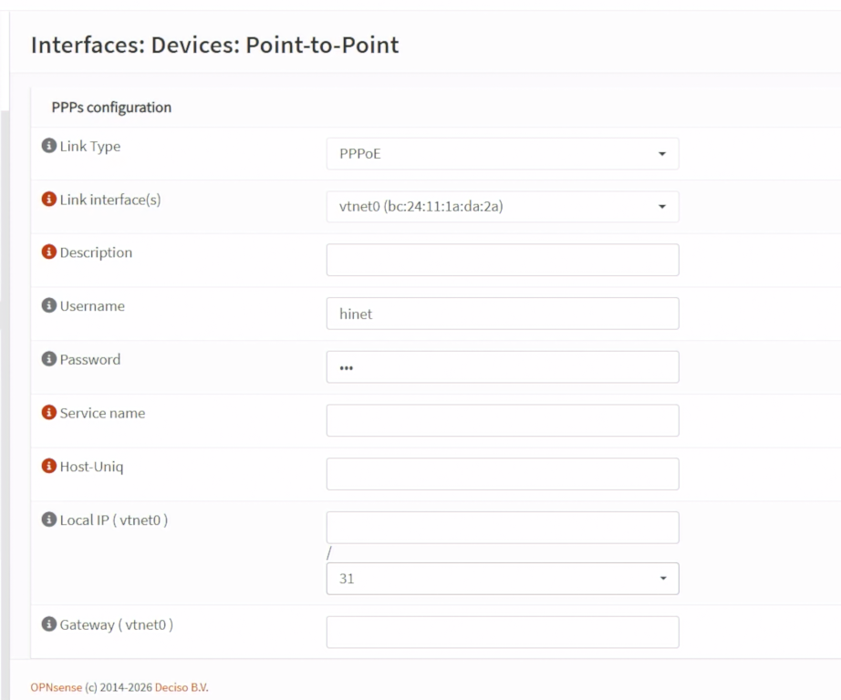

Day 12｜WAN 如何連上網際網路：OPNsense 的 DHCP、PPPoE、NAT 與 DDNS
對應文章：Day 12｜WAN 如何連上網際網路：OPNsense 的 DHCP、PPPoE、NAT 與 DDNS
本 Lab 先使用上游路由器 DHCP，等所有服務完成後再決定是否把實體 WAN 直接交給 OPNsense。沒有實體 Console 或獨立救援路徑時，不要直接切換 PPPoE。
1. 確認目前 Double NAT
到 Interfaces → Overview 記錄 WAN：
介面：vtnet0
IPv4 Configuration Type：DHCP
位址：由上游路由器配發的私有 IP
Gateway：上游路由器
因 WAN 收到私有 IP，到 Interfaces → WAN 取消 Block private networks，保留 Block bogon networks，按 Save／Apply。

圖（一）確認 OPNsense WAN、LAN 與 OPT1 介面狀態。
圖（二）Double NAT Lab 的 WAN 需取消 Block private networks。
到 System → Gateways → Configuration 確認 DHCP Gateway Online，再從 Interfaces → Diagnostics → Ping：
- Source 選 WAN。
- Ping 上游 Gateway。
- Ping
1.1.1.1。 - 到
Interfaces → Diagnostics → DNS Lookup查詢www.opnsense.org。

圖（三）確認 DHCP Gateway 目前為 Online。

圖（四）從 fw01 驗證公網 IPv4 可達性。

圖（五）從 fw01 驗證 DNS 名稱解析。
2. Source NAT
OPNsense 26.7 已將舊版的 Outbound NAT 選單改名為 Source NAT。到 Firewall → NAT → Source NAT：
- 先確認目前使用自動產生 Source NAT 規則的模式；這就是舊文件所稱的
Automatic outbound NAT rule generation。 - 本日維持自動模式，不新增手動 Source NAT 規則。
- 若畫面出現需要套用的變更，再按 Save／Apply；沒有變更時不需重新儲存設定。
- Day 13 建好 VLAN 後，回來確認自動產生的 Source NAT 規則是否包含
10.77.20.0/24～10.77.50.0/24。

圖（六）確認 OPNsense 自動產生的 Source NAT 規則。
不要在 VLAN 尚未建立前手工新增四條重複 NAT。
在舊版文章或搜尋結果中，以下名稱指的是同一類功能：
Outbound NAT
Source NAT
SNAT
本系列依 OPNsense 26.7 畫面統一使用 Source NAT。
3. 記錄上游路由器限制
Double NAT 下公開服務需要兩層轉送：
Internet
→ 上游路由器 Port Forward
→ fw01 WAN
→ OPNsense Port Forward
→ Web VIP 或 jump01
本系列已知上游路由器具有可接受入站連線的公網 IPv4。到上游路由器確認 WAN Address 與外部查到的公網 IP 相符；後續公開服務時，再分別建立上游路由器與 OPNsense 兩層 Port Forward。
4. PPPoE 切換步驟（本日只確認設定位置）
OPNsense 26.7 不再直接於 Interfaces → WAN 的 IPv4 Configuration Type 下拉選單建立 PPPoE。該選單只看到 None、Static IPv4 與 DHCP 是正常現象。PPPoE 必須先建立 Point-to-Point Device，再進行 Interface Assignment。
本日只確認下列選單位置，不輸入帳密、不按 Save／Apply，也不將目前 WAN 從 DHCP 改成 None。真正切換時，必須具備實體 Console／獨立救援網路，並已確認 ISP 帳密。
- 到
Interfaces→Devices→Point-to-Point，按Add。 - Link Type 選
PPPoE。 - Link interface 選 WAN Parent
vtnet0。 - 填入 ISP Username／Password；Service Name 與 Host-Uniq 只有 ISP 明確要求時才填。帳密不得寫入文件或提交至 Git。
- 儲存後到
Interfaces→Assignments，選擇新建立的pppoe0Device 並加入。 - 進入新指派的 PPPoE Interface，勾選 Enable，IPv4 Configuration Type 選
PPPoE，再 Save／Apply。 - 真正切換時，原本承載 DHCP 的 Parent WAN 必須停止取得 IPv4，避免同一條 WAN 同時保留 DHCP 與 PPPoE；這一步只在維護窗口執行。
- 從 PVE Console 確認 PPPoE Interface、WAN Address 與 Gateway，並到
System→Log Files→General檢查 PPP／LCP／Authentication 訊息。

圖（七）OPNsense Point-to-Point Device 的 PPPoE 設定位置。